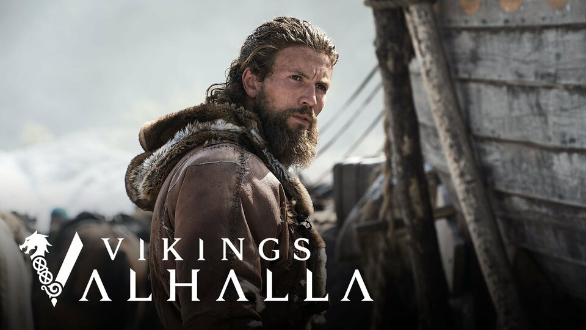

Recomendado para você


Mais assistidos essa semana




Dragon Ball Super Beerus é uma releitura de 6 episódios do arco inicial, focando no confronto entre Goku e o Deus da Destruição. A produção promete uma adaptação mais fiel ao mangá, com animação aprimorada, cenas inéditas e narração direta, removendo conteúdos considerados fillers.
